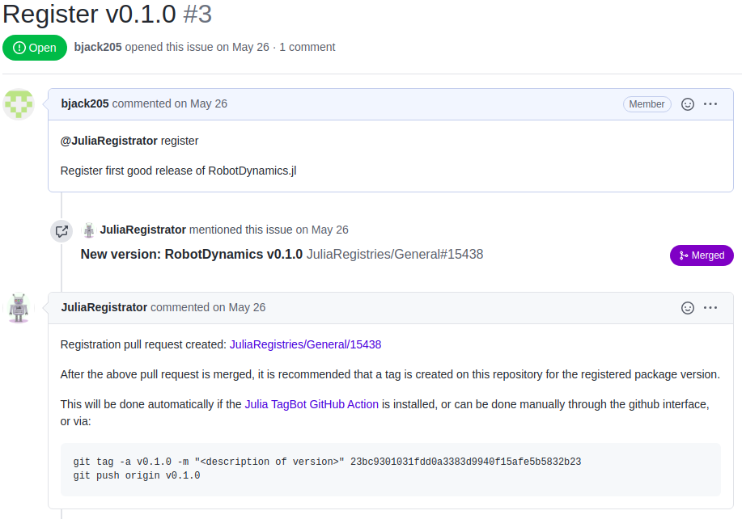

Registering Your Package
Registering a package with the Julia general registry is pretty straight forward.o
To register a new release, follow the exact same process (skipping step 1 since you'll already have JuliaRegistrator installed).
1. Add JuliaRegistrator
Add JuliaRegistrator to your repo. Follow the instructions in the repo. You should arrive at a screen that looks like the image below for your user/organization settings. Add your new repo.

2. Verify the version
The version is set by your Project.toml. In the example below, the version is v0.1.0. By default, most new repositories should be v0.1.0.
name = "Algames"
uuid = "bfba84be-7fa7-49e4-96a7-8b4754465918"
authors = ["Brian Jackson <bjack205@gmail.com>"]
version = "0.1.0"
[deps]
LinearAlgebra = "37e2e46d-f89d-539d-b4ee-838fcccc9c8e"
StaticArrays = "90137ffa-7385-5640-81b9-e52037218182"
[compat]
StaticArrays = "0.12"
julia = "1"3. Use JuliaRegistrator
Comment @JuliaRegistrator register on the commit/branch you would like to register. This can be done either by a) creating a new issue and commenting in the issue (top image below), or b) commenting on a commit (bottom image below).
New Issue

Comment on a commit

4. Check the pull request
Check the status of the pull request on JuliaRegistries/General (link is in the auto-generated comment below yours) to see if it passes the rules for auto-merging. If it fails, make the fixes and make a new comment with @JuliaRegistrator register. It will simply modify the previous pull request.
5. Create a Release
If you have TagBot installed, you're good to go! Otherwise, create a release with the new version in GitHub.